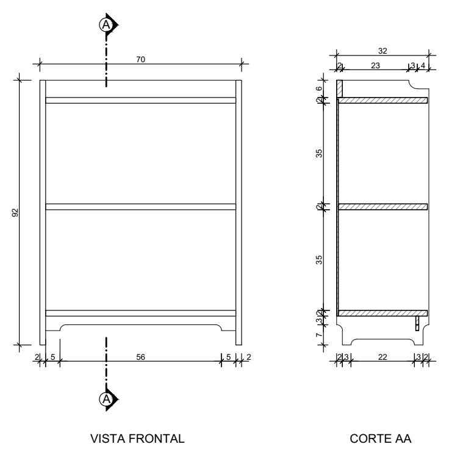

Ao longo do curso técnico em design de interiores, você estudou a utilização dos desenhos técnicos como plantas baixas, cortes, vistas e perspectivas para representação do ambiente que está projetando. O mesmo vale quando se fala de mobiliários: é preciso uma linguagem de desenho técnico que auxilie na produção dos móveis e na comunicação projetual, e isso é chamado de peças gráficas.
As peças gráficas desempenham um papel fundamental para a representação das informações de forma clara e precisa, pois é a partir desse desenho técnico que o marceneiro ou montador, por exemplo, tira a forma, as medidas e os encaixes das peças que formarão o mobiliário (Keidel et al., 1975).
Cada mobiliário terá a sua característica específica de material, fixação, dobradiças e assim por diante. Por exemplo, enquanto um painel ripado é fixado na parede, estantes podem ficar apenas apoiadas no piso. Para este material, será usada como exemplo a poltrona Ginga, do designer Thiago Sartorelli, para demonstrar as peças gráficas. Em seguida, você verá as principais formas utilizadas para a representação de um mobiliário: croquis, vistas, cortes, detalhamentos e perspectivas.
No início do processo de projeto há uma etapa de preconcepção e desenvolvimento conceitual. Munido de briefing, programa de necessidades e painéis conceituais, o projetista inicia a busca por um conceito de projeto, que guiará o processo e as decisões que serão tomadas (Aiex; Carraro, 2017). Nessa etapa, o croqui torna-se fundamental como norteador desse processo.
Croquis do designer Eero Saarinen para a cadeira Tulip
Fonte: Knoll (c2023)
Os croquis são esboços rápidos e informais que capturarão o conceito e a ideia do projetista. Esse esboço inicial demonstra as características gerais (Ching, 1999), ainda de forma inicial. Mesmo assim, já é possível ter uma ideia de forma, proporção e disposição geral do objeto ou mobiliário. Essa abordagem mais “informal” permite visualizar várias opções de design sem uma preocupação muito aprofundada com a precisão técnica.
A técnica para produção dos croquis não difere do que já foi visto ao longo do curso: desenhos à mão livre, respeitando a proporcionalidade e a escala humana, com a possibilidade de uso de cores e técnicas de sombreamento. Podem ser de forma “física”, utilizando lapiseiras e canetas; ou digital, utilizando tablets. É importante frisar que aqui se está considerando um mobiliário específico e não um ambiente.
Considere então a poltrona Ginga: depois de um bom tempo analisando o briefing, estabelecendo o programa de necessidades e trabalhando nos painéis e moodboards, o designer tem o seu conceito definido e parte para o croqui. Veja as possibilidades que o croqui já permite analisar.

Croquis iniciais da poltrona Ginga
Fonte: Sartorelli (2023)
A partir do croqui, já é possível ter uma boa noção de proporções, materiais, cores e acabamentos. Além disso, o croqui pode representar as diversas visualizações desse objeto, mostrando-o em perspectiva, vista frontal, corte e assim por diante. Note que a precisão não é tão importante: o que deve ser buscado é a proporcionalidade e a representação da materialidade.
Porém, esse é o limite do croqui. Como comentado inicialmente, as peças gráficas são fundamentais para a produção do objeto. Logo, é preciso um desenho mais técnico para representar o objeto quando se pensa em protótipos e produção. Por isso, entenda agora como são as características das vistas, dos cortes, dos detalhamentos e das perspectivas como ferramentas de projeto.
Depois dos croquis iniciais deve-se partir para o processo de concepção propriamente dito. Nele, os materiais, as texturas e as medidas deverão ser apresentados para que o mobiliário comece a tomar forma. Para que essas informações sejam apresentadas adequadamente, é preciso desenhar o mobiliário de maneira mais aprofundada, passando a pensar em vistas e cortes.
Lembra-se dos conceitos de plantas, vistas e cortes apresentados ao longo do curso de design de interiores? No desenho de mobiliário não é tão diferente. As vistas (que também podem ser chamadas de elevações) são representações bidimensionais do móvel a partir de diferentes ângulos de observação externos ao objeto. Podem ser vistas frontais, laterais, superiores etc.
Já os cortes mostrarão as características interiores do mobiliário, com o plano de seção “atravessando” o objeto. Eles são frequentemente usados para ilustrar como é o funcionamento interno do mobiliário, seja no uso ou nas formas de conexão e encaixe. Para mobiliário, o corte mais usual é o transversal, porém, os cortes longitudinal e em altura também são utilizados.

Vistas e corte de mobiliário
Fonte: Adaptado de Keidel
(1973)
Observe a figura anterior. Na imagem da esquerda há a vista frontal do móvel, mostrando as características de espaçamento entre as prateleiras, localização da linha de corte e apontamento de detalhamento. Na imagem da direita está o corte transversal, apresentando a profundidade do móvel, as cotas, quais os itens estão cortados e quais estão em vista. Esses desenhos são regidos por normas técnicas.
Que tal aprofundar seu conhecimento nessas características de visualização do desenho técnico?
No detalhamento de mobiliário, os traços e as espessuras de linha desempenham um papel fundamental para entendimento do projeto. Eles determinam a visibilidade e a importância de diferentes elementos em um desenho. Linhas grossas apresentam contornos e arestas visíveis; linhas finas são linhas auxiliares e de hachura no desenho.
Porém, é possível haver graficações diferentes. Traços contínuos geralmente representam contornos visíveis, enquanto linhas tracejadas ou interrompidas indicam elementos ocultos. A norma que define exatamente como deve ser cada um dos traços e espessuras é a Norma Brasileira (NBR) 16.861:2020. Observe, na tabela a seguir, alguns dos principais tipos de linha, espessuras e usos indicados:
| Linha | Denominação | Aplicação geral |
|---|---|---|
 |
Linha contínua extralarga |
|
| Linha contínua larga |
|
|
| Linha contínua estreita |
|
|
| Linha contínua à mão livre/curva de forma livre estreita |
|
|
| Linha contínua com zigue-zagues estreita |
|
|
| Linha tracejada |
|
|
| Linha traço longo e ponto |
|
|
| Linha traço longo e ponto duplo |
|
|
| Linha pontilhada |
|
Principais tipos de linha, espessuras e aplicação
geral
Fonte: ABNT (2020b)
No detalhamento de mobiliário, os traços e as espessuras de linha desempenham um papel fundamental para entendimento do projeto. Eles determinam a visibilidade e a importância de diferentes elementos em um desenho. Linhas grossas apresentam contornos e arestas visíveis; linhas finas são linhas auxiliares e de hachura no desenho.
Porém, é possível haver graficações diferentes. Traços contínuos geralmente representam contornos visíveis, enquanto linhas tracejadas ou interrompidas indicam elementos ocultos. A norma que define exatamente como deve ser cada um dos traços e espessuras é a Norma Brasileira (NBR) 16.861:2020. Observe, na tabela a seguir, alguns dos principais tipos de linha, espessuras e usos indicados:
| Linha | Denominação | Aplicação Geral |
|---|---|---|
|
Linha contínua extralarga |
|
| Linha contínua larga |
|
|
| Linha contínua estreita |
|
|
| Linha contínua à mão livre/curva de forma livre estreita |
|
|
| Linha contínua com zigue-zagues estreita |
|
|
| Linha tracejada |
|
|
| Linha traço longo e ponto |
|
|
| Linha traço longo e ponto duplo |
|
|
| Linha pontilhada |
|
Principais tipos de linha, espessuras e aplicação
geral
Fonte: Adaptado de NBR 16.861:2020
A simbologia e as hachuras são ferramentas muito importantes para indicar características específicas em vistas e cortes. Por exemplo, um símbolo circular de linha fina sobre o mobiliário indica que aquilo é um detalhamento. Símbolos de corte e vista também são muito utilizados para facilitar a leitura do trabalho.
Uma norma interessante para utilizar nesse contexto é a NBR 6.492:2021. Mesmo voltada para representação arquitetônica, os símbolos mostrados nela são comuns na representação de desenho de mobiliário. Ao mesmo tempo, as simbologias vistas até o momento no curso também podem ser utilizadas na produção das peças gráficas.
Já as hachuras em corte são regidas pela NBR 12.298:1995. A principal característica é que a representação de itens cortados do projeto deve ser feita em diagonal, conforme a imagem:
Hachura para itens cortados
Fonte: ABNT (1995)
Além disso, é possível também ter representações específicas para diferentes materiais. A NBR 6.492:2021 sugere algumas indicações de hachuras em vista:
![Descrição ALT: Listagem de cinco materiais com hachuras específicas. O primeiro, madeira em vista: linhas orgânicas concêntricas e espalhadas, imitando os veios de madeira; o segundo, compensado de madeira: linhas horizontais com espaçamento igual; o terceiro, mármore/granito em vista: linhas orgânicas aleatórias, com formato parecido com o de raios; o quarto, concreto em vista: linhas em diagonal entre 110 e 120º de inclinação com espaçamento aleatório, e pequenas marcas pontuais aleatórias desenhadas; o quinto, borracha, vinil, neoprene, mastique etc.: linhas em diagonal nos dois sentidos, formando uma textura similar a uma grade.](imgs/05.jpg)
Hachura para itens em vista utilizados em mobiliários Fonte: ABNT (2021)
A simbologia e as hachuras são ferramentas muito importantes para indicar características específicas em vistas e cortes. Por exemplo, um símbolo circular de linha fina sobre o mobiliário indica que aquilo é um detalhamento. Símbolos de corte e vista também são muito utilizados para facilitar a leitura do trabalho.
Uma norma interessante para utilizar nesse contexto é a NBR 6.492:2021. Mesmo voltada para representação arquitetônica, os símbolos mostrados nela são comuns na representação de desenho de mobiliário. Ao mesmo tempo, as simbologias vistas até o momento no curso também podem ser utilizadas na produção das peças gráficas.
Já as hachuras em corte são regidas pela NBR 12.298:1995. A principal característica é que a representação de itens cortados do projeto deve ser feita em diagonal, conforme a imagem:
Hachura para itens cortados
Fonte: NBR 12.298:1995
Além disso, é possível também ter representações específicas para diferentes materiais. A NBR 6.492:2021 sugere algumas indicações de hachuras em vista:
Hachura para itens em vista utilizados em mobiliários Fonte: Adaptado de NBR 6.492:2021
A escala determina a relação entre as dimensões do desenho e as dimensões reais do mobiliário, conforme já estudado em unidades curriculares anteriores. A escolha de uma escala apropriada dependerá do tamanho e da complexidade do mobiliário, que pode ser de um pequeno gaveteiro até um closet. Por isso, a escala em que será apresentado o mobiliário bem como as dimensões da folha de desenho devem ser bem planejadas. A tabela a seguir indica as escalas que o desenho técnico deve apresentar, conforme a NBR 16.752/2020:
| Redução | Natural | Ampliação |
|---|---|---|
| 1:2 | 1:1 | 2:1 |
| 1:5 | 5:1 | |
| 1:10 | 10:11 |
Escalas de desenho técnico
Fonte: NBR 16752:2020
A nota da tabela indica que escalas como 1:20 também podem ser empregadas. Essa também é uma escala muitas vezes utilizada pelo designer de mobiliário.
As cotas são valores numéricos que indicam as dimensões exatas do mobiliário de um desenho. Com elas, é possível comunicar com precisão as medidas do projeto. Os padrões já vistos nas unidades anteriores se mantêm aqui: toda cotagem necessária para descrever algo do mobiliário deve ser representada no desenho; as cotas devem estar na vista ou no corte que representem mais claramente o elemento e as unidades devem ser uniformes. Para informações mais detalhadas, a norma utilizada é a NBR 10.126:1987.
Retomando a poltrona Ginga, observe na figura as vistas e os cortes do projeto que indicam tudo o que foi mostrado até o momento: diferentes traços e espessuras, simbologias apropriadas, escalas indicadas e cotas.
Vistas da poltrona Ginga
Fonte: Sartorelli (2023)
Note que este foi um passo a mais a partir do croqui: aqui, o projeto já está caminhando para uma etapa em que detalhes de encaixe e montagem são importantes. Para essas informações serão importantíssimos os detalhamentos e as perspectivas isométricas.
Os detalhamentos são os desenhos que fornecerão informações e especificações precisas sobre componentes individuais de um projeto de mobiliário. Neles, dimensões exatas, tolerâncias, materiais e métodos de fabricação são imprescindíveis. Além disso, notas técnicas trarão mais explicações e informações sobre o detalhe. Outro fator importante é a escala: os detalhes devem ser ampliados em escalas de 1:5, podendo chegar a 1:1.
É importante frisar que um detalhe de mobiliário varia nas mais diversas formas e dependerá do material, do encaixe e do objetivo. Com isso, torna-se inviável apresentar todos os tipos existentes de detalhamento de montagem de um mobiliário. É muito importante ter um marceneiro (por exemplo) de confiança para trocar informações e saber como é feito na prática um móvel, para que seu projeto fique o mais claro possível. Como exemplo, considere novamente a poltrona Ginga.
Detalhamento da poltrona Ginga
Fonte: Sartorelli (2023)
Note que os esquemas apresentados demonstram encaixes e fixações necessárias. É importante observar também que a mesma característica de traço, simbologia, hachura, escala e cota citada nas vistas e nos cortes aparece aqui novamente.
Além disso, é importante observar que os detalhes podem ser feitos tanto em corte quanto em vista. O importante é que o detalhamento ajude no entendimento do processo de fabricação, ajudando as partes envolvidas a comunicarem-se de maneira descomplicada.
Detalhamentos são essenciais para a produção e montagem de peças, garantindo que tudo seja fabricado conforme as especificações. Outra maneira de apresentar um detalhe ou facilitar o entendimento de um projeto é a partir de perspectivas isométricas. Entenda-as um pouco melhor:
Finalmente tem-se as perspectivas isométricas para auxiliar o designer na representação gráfica do mobiliário. Esses desenhos têm como característica visualizar, simplificadamente, o objeto sem distorção de medidas. A palavra “isométrica” já indica o seu significado: “iso” pode ser traduzido como igual, e “métrica” está associado à “medida”. Isso significa que as medidas reais do objeto devem ser representadas nas suas três dimensões proporcionalmente. Para isso, deve-se ter atenção a alguns detalhes.
Você já deve ter observado estes tipos de desenho ao ler um manual de montagem de um mobiliário.
![Descrição ALT: Manual de montagem mostrando diversas perspectivas isométricas, facilitando a montagem da escrivaninha. A perspectiva número 1 mostra a escrivaninha em isométrica simples; as números 2 e 3 são isométricas explodidas em diferentes posições, mostrando encaixes e letras para identificar cada uma das peças; a número 4 mostra a escrivaninha em isométrica simples com a porta aberta, mostrando detalhe da dobradiça; a número 5 mostra a escrivaninha em isométrica simples indicando os fundos da escrivaninha. Completa a imagem uma tabela com letras, que identifica cada uma das peças que serão utilizadas na montagem.](imgs/08.jpg)
Manual de montagem de mobiliário com perspectiva isométrica simples e explodida
Fonte: Movesinos Industria de Móveis (c2019)
Note que o manual tem imagens da mesa pronta, mas também uma imagem da maneira como a mesa deve ser montada. As imagens 1, 4 e 5 são as perspectivas isométricas simples. Com essas imagens é possível ter uma boa noção dos tamanhos, das proporções e das medidas da mesa. Além disso, pode-se produzir essas imagens dos mais diversos ângulos de visualização, obtendo mais informações sobre o produto.
As imagens 2 e 3 representam as isométricas explodidas. Com elas, tem-se as medidas em proporção: porém, ela é apresentada de maneira separada, demonstrando e facilitando o entendimento de montagem do produto, trazendo detalhes sobre encaixes, detalhes internos etc. Aqui, os elementos da mesa são deslocados em três direções, respeitando a ordem em que se encaixam. Além disso, linhas pontilhadas ou finas demonstram o sentido de deslocamento de cada elemento (Penteado Neto et al., 2017).
Analise novamente a poltrona Ginga. Observe a representação simples e explodida, suas características, medidas e até mesmo aplicação de texturas para facilitar o entendimento do mobiliário.

Perspectiva isométrica simples e explodida da poltrona Ginga
Fonte: Sartorelli (2023)
As peças gráficas desempenham um papel muito importante nos projetos de mobiliários de qualquer tipo, seja um pequeno banco ou um armário completo. Desde os croquis iniciais até as perspectivas e detalhes finais, cada representação gráfica desempenhará um papel específico na compreensão e execução bem-sucedida do mobiliário.
Atualmente, existem diversas maneiras de produzir essas peças gráficas, como softwares de desenho (AutoCAD), modelagem 3D (SketchUp e Promob), ou até mesmo manualmente. O importante é que o projetista domine essas técnicas gráficas para comunicação com outros profissionais e clientes.